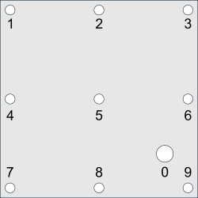

Module ctsimu.evaluation.test2D_HS_1
Test 2D-HS-1: Object and detector placement
This test checks for correct positioning of sample and detector. An STL file that represents a thin foil with ten holes must be placed according to the correct bounding box position and orientation as described in the scenario. The STL file's native coordinates do not match the coordinates where it has to be placed. Additionally, the correct detector position and orientation must be set up in order to get the correct projection image. The evaluation procedure will calculate translation vectors, rotation angles and scale factors relative to the ideal pixel coordinates of the holes.
from ctsimu.toolbox import Toolbox
Toolbox("2D-HS-1", "2D-HS-1_metadata.json")
The test tries to find the ten holes in the projection image. If it cannot identify exactly ten holes, the test will be aborted completely. The centers of the holes are determined by fitting a circle to each hole boundary (Coope et al., 1993) after application of an edge filter. Hole number 0 has a bigger diameter than the other holes and serves as a symmetry breaker and reference anchor from which all other holes are identified.

Expand source code
# -*- coding: UTF-8 -*-
"""# Test 2D-HS-1: Object and detector placement
.. include:: ./test2D_HS_1.md
"""
from ..test import *
from ..geometry import Vector, in_mm_json
from ..helpers import *
from ..scenario import Scenario
class ballCollector():
""" We will add the circles to the ball collector. It decides which circle is which. """
def __init__(self):
# Prepare a list to contain the circle vectors:
self.n_circles_expected = 10
self.circlesUnordered = []
self.circlesInOrder = [None] * self.n_circles_expected
#self.distancesToCorners = [None] * self.n_circles_expected
self.greatCircleIndex = 0
self.maxCircleRadius = 0
def addCircle(self, coords, R): # tuple: coords = (cx, cy)
if self.maxCircleRadius < R: # Remember the biggest circle
self.maxCircleRadius = R
self.greatCircleIndex = len(self.circlesUnordered)
circle2Dpos = Vector(coords[0], coords[1], 0)
self.circlesUnordered.append(circle2Dpos)
def sortCircles(self):
if len(self.circlesUnordered) == self.n_circles_expected:
# Find all connection vectors from the great hole to the other holes:
greatCircle = self.circlesUnordered.pop(self.greatCircleIndex)
self.circlesInOrder[0] = greatCircle
# circlesUnordered now only contains the 9 small circles, and must remain so (not to mess up indices).
## Create list of connection vectors:
connectionVectors = []
for i in range(len(self.circlesUnordered)):
connectionVectors.append(Vector.connection(greatCircle, self.circlesUnordered[i]))
## Find vector pair with smallest and biggest angle:
small = None
hole9idx = None
smallestAngle = math.pi
smallestDistance = connectionVectors[0].length()
for i in range(len(connectionVectors)):
# Hole 9 is the hole with the smallest distance to the great hole:
if smallestDistance > connectionVectors[i].length():
hole9idx = i
smallestDistance = connectionVectors[i].length()
# Find angles between connection vectors of each circle pair:
for j in range(i+1, len(connectionVectors)):
angle = connectionVectors[i].angle(connectionVectors[j])
if smallestAngle > abs(angle):
smallestAngle = abs(angle)
small = (i, j)
# Hole 1 is the hole from the connection vector pair with the smallest angle
# that is also the farthest away from the great circle.
# Hole 5 is the one that is closer to the great circle.
connection0to1 = None
if self.circlesUnordered[small[0]].distance(greatCircle) > self.circlesUnordered[small[1]].distance(greatCircle):
self.circlesInOrder[1] = self.circlesUnordered[small[0]]
self.circlesInOrder[5] = self.circlesUnordered[small[1]]
else:
self.circlesInOrder[5] = self.circlesUnordered[small[0]]
self.circlesInOrder[1] = self.circlesUnordered[small[1]]
# Hole 9 is one of the circles with the smallest distance to the big hole:
self.circlesInOrder[9] = self.circlesUnordered[hole9idx]
# Diagonal from hole 9 to hole 1:
diagonal91 = Vector.connection(self.circlesInOrder[9], self.circlesInOrder[1])
remainingCirclesAndDiagonalAngles = []
for i in range(len(connectionVectors)):
if not ((i in small) or (i == hole9idx)):
angle = diagonal91.angle(connectionVectors[i])
remainingCirclesAndDiagonalAngles.append((i, angle))
# Sort list by angles:
remainingCirclesAndDiagonalAngles = sorted(remainingCirclesAndDiagonalAngles, key=lambda x: x[1])
i = 0
for circle in remainingCirclesAndDiagonalAngles:
# The sign of the cross product's z component tells us
# which side of the diagonal the circle lies on:
idx = circle[0]
angle = circle[1]
cross = diagonal91.cross(connectionVectors[idx])
if i < 2: # First vector pair with smallest angle towards diagonal
if cross.z() > 0: # To the "right"
self.circlesInOrder[2] = self.circlesUnordered[idx]
else: # To the "left"
self.circlesInOrder[4] = self.circlesUnordered[idx]
elif i < 4: # Second vector pair with medium-sized angle towards diagonal
if cross.z() > 0: # To the "right"
self.circlesInOrder[3] = self.circlesUnordered[idx]
else: # To the "left"
self.circlesInOrder[7] = self.circlesUnordered[idx]
elif i < 6: # Second vector pair with medium-sized angle towards diagonal
if cross.z() > 0: # To the "right"
self.circlesInOrder[6] = self.circlesUnordered[idx]
else: # To the "left"
self.circlesInOrder[8] = self.circlesUnordered[idx]
i += 1
else:
raise Exception("A total of {} holes is needed. Found: {} holes.".format(self.n_circles_expected, len(self.circlesUnordered)))
def nCircles(self):
return len(self.circlesInOrder)
def nCirclesFound(self):
n = 0
for c in self.circlesInOrder:
if c is not None:
n = n+1
return n
def getCircle(self, i):
if i >= 0 and i < self.nCircles():
return self.circlesInOrder[i]
else:
raise Exception("Circle with index {i} does not exist.".format(i=i))
def scale(self, factor, aroundHole):
for i in range(len(self.circlesInOrder)):
if i != aroundHole:
connection = Vector.connection(self.circlesInOrder[aroundHole], self.circlesInOrder[i])
connection.scale(factor)
connection.add(self.circlesInOrder[aroundHole])
self.circlesInOrder[i] = connection
def rotate(self, angle, aroundHole):
axis = Vector(0, 0, -1)
for i in range(len(self.circlesInOrder)):
if i != aroundHole:
connection = Vector.connection(self.circlesInOrder[aroundHole], self.circlesInOrder[i])
connection.rotate(axis, angle)
connection.add(self.circlesInOrder[aroundHole])
self.circlesInOrder[i] = connection
def distance(self, a, b):
if (a is not None) and (b is not None):
if (a >= 0) and (a < self.nCircles()):
if (b >= 0) and (b < self.nCircles()):
if self.circlesInOrder[a] is not None:
if self.circlesInOrder[b] is not None:
return self.circlesInOrder[a].distance(self.circlesInOrder[b])
else:
raise Exception("Error: Circle {} not found. Cannot continue with test.".format(b))
else:
raise Exception("Error: Circle {} not found. Cannot continue with test.".format(a))
raise Exception("Requested Distance: Index for circle a ({a}) or b ({b}) out of bounds.".format(a=a, b=b))
def printResults(self):
text = ""
for i in range(self.nCircles()):
text += "Hole {:02d}: ".format(i)
if self.circlesInOrder[i] is None:
text += "Not found!"
else:
text += " cx = {:.3f} px,\tcy = {:.3f} px".format(self.circlesInOrder[i].x(), self.circlesInOrder[i].y())
text += "\n"
return text
def printResults_tabular(self):
text = "Hole\tcenter_x [px]\tcenter_y [px]\n"
for i in range(self.nCircles()):
text += "{:02d}\t".format(i)
if self.circlesInOrder[i] is None:
text += "Not found!"
else:
text += "{:.3f}\t{:.3f}".format(self.circlesInOrder[i].x(), self.circlesInOrder[i].y())
text += "\n"
return text
class Test2D_HS_1(generalTest):
""" CTSimU test 2D-HS-1: object positioning. """
def __init__(self, resultFileDirectory=".", name=None, rawOutput=False):
generalTest.__init__(
self,
testName="2D-HS-1",
name=name,
nExpectedRuns=1,
resultFileDirectory=resultFileDirectory,
rawOutput=rawOutput)
self.success = False
# Future circle collector (class ballCollector):
self.circleCollection = None
self.nominalCircles = ballCollector()
# Detector parameters:
self.pixelSizeX = None
self.pixelSizeY = None
self.detectorWidthPx = None
self.detectorHeightPx = None
self.detectorWidthMM = None
self.detectorHeightMM = None
# Results of the evaluation:
self.meanTranslationVector = None
self.inPlaneRotation = None
self.scaleFactor = None
def worldToDetector(self, yWorld, zWorld):
# mirror x and y:
x = -yWorld
y = -zWorld
x += self.detectorWidthMM/2
y += self.detectorHeightMM/2
x /= self.pixelSizeX
y /= self.pixelSizeY
return (x, y)
def prepare(self):
""" Preparations before the test will be run with the images from the pipeline. """
self.jsonScenarioFile = "2D-HS-1_2021-03-24v02r00dp.json"
if self.jsonScenarioFile is not None:
scenario = Scenario(json_dict=json_from_pkg(pkg_scenario(self.jsonScenarioFile)))
self.pixelSizeX = scenario.detector.pixel_pitch.u.get()
self.pixelSizeY = scenario.detector.pixel_pitch.v.get()
self.detectorWidthPx = scenario.detector.columns.get()
self.detectorHeightPx = scenario.detector.rows.get()
self.detectorWidthMM = self.detectorWidthPx * self.pixelSizeX
self.detectorHeightMM = self.detectorHeightPx * self.pixelSizeY
self.nominalCircles.addCircle(self.worldToDetector(yWorld=-160, zWorld=-140), R=133)
self.nominalCircles.addCircle(self.worldToDetector(yWorld= 205, zWorld= 205), R=66)
self.nominalCircles.addCircle(self.worldToDetector(yWorld= 0, zWorld= 205), R=66)
self.nominalCircles.addCircle(self.worldToDetector(yWorld=-205, zWorld= 205), R=66)
self.nominalCircles.addCircle(self.worldToDetector(yWorld= 205, zWorld= 0), R=66)
self.nominalCircles.addCircle(self.worldToDetector(yWorld= 0, zWorld= 0), R=66)
self.nominalCircles.addCircle(self.worldToDetector(yWorld=-205, zWorld= 0), R=66)
self.nominalCircles.addCircle(self.worldToDetector(yWorld= 205, zWorld=-205), R=66)
self.nominalCircles.addCircle(self.worldToDetector(yWorld= 0, zWorld=-205), R=66)
self.nominalCircles.addCircle(self.worldToDetector(yWorld=-205, zWorld=-205), R=66)
self.nominalCircles.sortCircles()
self.prepared = True
def run(self, image):
self.prepare()
self.currentRun += 1
self.success = False
log("Running test {}".format(self.testName))
n_circles_expected = 10
holeImg = copy.deepcopy(image)
# Thresholding splits image into black and white, to remove artifacts:
thresh = holeImg.max() - 0.1*(holeImg.max()-holeImg.min())
log("Binarization threshold: {:.3f}".format(thresh))
holeImg.applyThreshold(threshold=thresh, lower=0, upper=60000)
if self.rawOutput:
holeImg.saveRAW("{dir}/{name}_01_binarized.raw".format(dir=self.resultFileDirectory, name=self.name), dataType="uint16", addInfo=True)
else: # TIFF
holeImg.save("{dir}/{name}_01_binarized.tif".format(dir=self.resultFileDirectory, name=self.name), dataType="uint16")
# Clean big patch(es) that are not circles:
nPatches, nCleaned, nRemaining, patchGeometry = holeImg.cleanPatches(min_patch_area=(5*5), max_patch_area=None, remove_border_patches=True)
if self.rawOutput:
holeImg.saveRAW("{dir}/{name}_02_cleaned.raw".format(dir=self.resultFileDirectory, name=self.name), dataType="uint16", addInfo=True)
else: # TIFF
holeImg.save("{dir}/{name}_02_cleaned.tif".format(dir=self.resultFileDirectory, name=self.name), dataType="uint16")
log("Looking for {} circles, found {} structures.".format(n_circles_expected, nRemaining))
if(nRemaining != n_circles_expected):
log("Error: Cannot continue with test.")
else:
log("That's good. Trying to fit circles to the following structures at center coordinates (cx, cy).")
# Find edges:
holeImg.filter_edges(mode="sobel")
thresh = (holeImg.max()+holeImg.min())/2.0
log("Binarization threshold: {:.3f}".format(thresh))
holeImg.applyThreshold(threshold=thresh, lower=0, upper=60000)
if self.rawOutput:
holeImg.saveRAW("{dir}/{name}_03_edges.raw".format(dir=self.resultFileDirectory, name=self.name), dataType="uint16", addInfo=True)
else:
holeImg.save("{dir}/{name}_03_edges.tif".format(dir=self.resultFileDirectory, name=self.name), dataType="uint16")
i=0
greatRadius = 0
greatCircle = -1
circles = []
log("Running the circle fits...")
for cx, cy, width, height in patchGeometry:
#log(" Structure {:02d}: cx={}, cy={}, width={}, height={}".format(i, cx, cy, width, height))
circleImg = copy.deepcopy(holeImg)
x = int(cx)
y = int(cy)
w = int(1.8*width)
h = int(1.8*height)
# Crop circle:
left, right, top, bottom = circleImg.cropROIaroundPoint(x, y, w, h)
if self.rawOutput:
circleImg.saveRAW(f"{self.resultFileDirectory}/{self.name}_04_circle_{i:02d}.raw", dataType="uint16", addInfo=True)
else:
circleImg.save(f"{self.resultFileDirectory}/{self.name}_04_circle_{i:02d}.tif", dataType="uint16")
# Fit circle:
#log(" Fitting circle...")
centerX, centerY, radius, meanDifference, minDifference, maxDifference = circleImg.fitCircle()
print(f"Left: {left} Top: {top} x: {centerX} y: {centerY}")
centerX += left
centerY += top
log(f" Found: cx={centerX:.4f}, cy={centerY:.4f}, R={radius:.4f}")
# Find the biggest circle. This will be the symmetry breaker.
if radius > greatRadius:
greatRadius = radius
greatCircle = i
circles.append((centerX, centerY, radius))
i += 1
if greatCircle >= 0:
greatX, greatY, greatR = circles[greatCircle]
self.circleCollection = ballCollector()
for i in range(len(circles)):
cx, cy, R = circles[i]
self.circleCollection.addCircle((cx, cy), R)
self.success = True
else:
log("No circles found. Cannot continue with test.")
return image
def followUp(self):
if self.success:
log("Writing evaluation results...")
self.circleCollection.sortCircles()
summaryText = "# Evaluation of test {}\n".format(self.testName)
summaryText += "#\n"
summaryText += "# Hole Coordinates:\n"
log("Hole locations found:")
log(self.circleCollection.printResults())
summaryText += self.circleCollection.printResults_tabular()
if self.circleCollection.nCirclesFound() < self.circleCollection.n_circles_expected:
log("Only {n} of the expected {N} holes were correctly identified. Test cannot continue.".format(n=self.circleCollection.nCirclesFound(), N=self.circleCollection.n_circles_expected))
return
else:
log("Okay, all circles identified.")
# Mean Scale:
scaleAgainstCircle = 5
summaryText += "\n"
summaryText += "Scale factor,\n"
summaryText += "from hole distances: scale = 1 - dist(ideal)/dist(real)\n"
summaryText += "===============================================================\n"
scaleDevList = []
for i in range(self.nominalCircles.nCircles()-1):
for j in range(i+1, self.nominalCircles.nCircles()):
length_ideal = self.nominalCircles.getCircle(i).distance(self.nominalCircles.getCircle(j))
length_real = self.circleCollection.getCircle(i).distance(self.circleCollection.getCircle(j))
scale = 1.0 - length_ideal / length_real
summaryText += "Scale dev. ({i}, {j}): {space}{scale:.7f}\n".format(i=i, j=j, space=" "*(scale>=0), scale=scale)
scaleDevList.append(scale)
meanScaleDeviation, stdDevScaleDeviation = list_mean_and_stddev(scaleDevList)
summaryText += "---------------------------------------------------------------\n"
summaryText += "Mean scale deviation: {space}{value:.7f}\n".format(space=" "*(meanScaleDeviation>=0), value=meanScaleDeviation)
summaryText += "StdDev scale deviation: {space}{value:.7f}\n".format(space=" "*(stdDevScaleDeviation>=0), value=stdDevScaleDeviation)
## Scale the real circle collection back by that scale factor...
self.circleCollection.scale(factor=1-meanScaleDeviation, aroundHole=scaleAgainstCircle)
# Mean rotation angle:
rotateAroundCircle = 5
summaryText += "\n"
summaryText += "In-plane rotation\n"
summaryText += "===============================================================\n"
meanAngle = 0
stdDevAngle = 0
angleList = []
for i in range(self.nominalCircles.nCircles()-1):
for j in range(i+1, self.nominalCircles.nCircles()):
connection_ideal = Vector.connection(self.nominalCircles.getCircle(i), self.nominalCircles.getCircle(j))
connection_real = Vector.connection(self.circleCollection.getCircle(i), self.circleCollection.getCircle(j))
angle = connection_ideal.angle(connection_real)
# angular orientation:
cross = connection_ideal.cross(connection_real)
if (cross.z() < 0) and (abs(angle) < (math.pi - 0.0000001)):
angle = -abs(angle)
else:
angle = abs(angle)
summaryText += "Tilt angle ({i}, {j}): {space}{angle:.7f} rad = {space}{angleDeg:.7f} deg\n".format(i=i, j=j, space=" "*(angle>=0), angle=angle, angleDeg=(angle*180.0/math.pi))
angleList.append(angle)
meanAngle, stdDevAngle = list_mean_and_stddev(angleList)
summaryText += "---------------------------------------------------------------\n"
summaryText += "Mean rotation angle: {space}{value:.7f} rad = {space}{angleDeg:.7f} deg\n".format(space=" "*(meanAngle>=0), value=meanAngle, angleDeg=(meanAngle*180.0/math.pi))
summaryText += "StdDev rotation angle: {space}{value:.7f} rad = {space}{angleDeg:.7f} deg\n".format(space=" "*(stdDevAngle>=0), value=stdDevAngle, angleDeg=(stdDevAngle*180.0/math.pi))
summaryText += "\n"
## Rotate the real circle collection back by that angle...
self.circleCollection.rotate(meanAngle, rotateAroundCircle)
# Mean translation vector:
summaryText += "Translation analysis\n"
summaryText += "===============================================================\n"
translationsX = []
translationsY = []
for i in range(self.nominalCircles.nCircles()):
translation = Vector.connection(self.nominalCircles.getCircle(i), self.circleCollection.getCircle(i))
summaryText += "Translation hole {i:02d} [px]: {vec}\n".format(i=i, vec=translation)
translationsX.append(translation.x())
translationsY.append(translation.y())
meanTranslationX, stdDevTranslationX = list_mean_and_stddev(translationsX)
meanTranslationY, stdDevTranslationY = list_mean_and_stddev(translationsY)
meanTranslation = Vector(meanTranslationX, meanTranslationY, 0)
stdDevTranslation = Vector(stdDevTranslationX, stdDevTranslationY, 0)
summaryText += "---------------------------------------------------------------\n"
summaryText += "Mean translation vector [px]: {}\n".format(meanTranslation)
summaryText += "StdDev translation [px]: {}".format(stdDevTranslation)
# Special Summary Line:
#summaryText += "\n\n"
#summaryText += "{}\t{}\t{}\t{}\t{}\t{}\t{}\t{}".format(meanScaleDeviation, stdDevScaleDeviation, meanAngle, stdDevAngle, meanTranslation.x(), stdDevTranslation.x(), meanTranslation.y(), stdDevTranslation.y()
resultFileName = "{}/{}_summary.txt".format(self.resultFileDirectory, self.name)
with open(resultFileName, 'w') as resultFile:
resultFile.write(summaryText)
resultFile.close()
self.plotResults()
def plotResults(self):
returnClasses
class Test2D_HS_1 (resultFileDirectory='.', name=None, rawOutput=False)-
CTSimU test 2D-HS-1: object positioning.
Expand source code
class Test2D_HS_1(generalTest): """ CTSimU test 2D-HS-1: object positioning. """ def __init__(self, resultFileDirectory=".", name=None, rawOutput=False): generalTest.__init__( self, testName="2D-HS-1", name=name, nExpectedRuns=1, resultFileDirectory=resultFileDirectory, rawOutput=rawOutput) self.success = False # Future circle collector (class ballCollector): self.circleCollection = None self.nominalCircles = ballCollector() # Detector parameters: self.pixelSizeX = None self.pixelSizeY = None self.detectorWidthPx = None self.detectorHeightPx = None self.detectorWidthMM = None self.detectorHeightMM = None # Results of the evaluation: self.meanTranslationVector = None self.inPlaneRotation = None self.scaleFactor = None def worldToDetector(self, yWorld, zWorld): # mirror x and y: x = -yWorld y = -zWorld x += self.detectorWidthMM/2 y += self.detectorHeightMM/2 x /= self.pixelSizeX y /= self.pixelSizeY return (x, y) def prepare(self): """ Preparations before the test will be run with the images from the pipeline. """ self.jsonScenarioFile = "2D-HS-1_2021-03-24v02r00dp.json" if self.jsonScenarioFile is not None: scenario = Scenario(json_dict=json_from_pkg(pkg_scenario(self.jsonScenarioFile))) self.pixelSizeX = scenario.detector.pixel_pitch.u.get() self.pixelSizeY = scenario.detector.pixel_pitch.v.get() self.detectorWidthPx = scenario.detector.columns.get() self.detectorHeightPx = scenario.detector.rows.get() self.detectorWidthMM = self.detectorWidthPx * self.pixelSizeX self.detectorHeightMM = self.detectorHeightPx * self.pixelSizeY self.nominalCircles.addCircle(self.worldToDetector(yWorld=-160, zWorld=-140), R=133) self.nominalCircles.addCircle(self.worldToDetector(yWorld= 205, zWorld= 205), R=66) self.nominalCircles.addCircle(self.worldToDetector(yWorld= 0, zWorld= 205), R=66) self.nominalCircles.addCircle(self.worldToDetector(yWorld=-205, zWorld= 205), R=66) self.nominalCircles.addCircle(self.worldToDetector(yWorld= 205, zWorld= 0), R=66) self.nominalCircles.addCircle(self.worldToDetector(yWorld= 0, zWorld= 0), R=66) self.nominalCircles.addCircle(self.worldToDetector(yWorld=-205, zWorld= 0), R=66) self.nominalCircles.addCircle(self.worldToDetector(yWorld= 205, zWorld=-205), R=66) self.nominalCircles.addCircle(self.worldToDetector(yWorld= 0, zWorld=-205), R=66) self.nominalCircles.addCircle(self.worldToDetector(yWorld=-205, zWorld=-205), R=66) self.nominalCircles.sortCircles() self.prepared = True def run(self, image): self.prepare() self.currentRun += 1 self.success = False log("Running test {}".format(self.testName)) n_circles_expected = 10 holeImg = copy.deepcopy(image) # Thresholding splits image into black and white, to remove artifacts: thresh = holeImg.max() - 0.1*(holeImg.max()-holeImg.min()) log("Binarization threshold: {:.3f}".format(thresh)) holeImg.applyThreshold(threshold=thresh, lower=0, upper=60000) if self.rawOutput: holeImg.saveRAW("{dir}/{name}_01_binarized.raw".format(dir=self.resultFileDirectory, name=self.name), dataType="uint16", addInfo=True) else: # TIFF holeImg.save("{dir}/{name}_01_binarized.tif".format(dir=self.resultFileDirectory, name=self.name), dataType="uint16") # Clean big patch(es) that are not circles: nPatches, nCleaned, nRemaining, patchGeometry = holeImg.cleanPatches(min_patch_area=(5*5), max_patch_area=None, remove_border_patches=True) if self.rawOutput: holeImg.saveRAW("{dir}/{name}_02_cleaned.raw".format(dir=self.resultFileDirectory, name=self.name), dataType="uint16", addInfo=True) else: # TIFF holeImg.save("{dir}/{name}_02_cleaned.tif".format(dir=self.resultFileDirectory, name=self.name), dataType="uint16") log("Looking for {} circles, found {} structures.".format(n_circles_expected, nRemaining)) if(nRemaining != n_circles_expected): log("Error: Cannot continue with test.") else: log("That's good. Trying to fit circles to the following structures at center coordinates (cx, cy).") # Find edges: holeImg.filter_edges(mode="sobel") thresh = (holeImg.max()+holeImg.min())/2.0 log("Binarization threshold: {:.3f}".format(thresh)) holeImg.applyThreshold(threshold=thresh, lower=0, upper=60000) if self.rawOutput: holeImg.saveRAW("{dir}/{name}_03_edges.raw".format(dir=self.resultFileDirectory, name=self.name), dataType="uint16", addInfo=True) else: holeImg.save("{dir}/{name}_03_edges.tif".format(dir=self.resultFileDirectory, name=self.name), dataType="uint16") i=0 greatRadius = 0 greatCircle = -1 circles = [] log("Running the circle fits...") for cx, cy, width, height in patchGeometry: #log(" Structure {:02d}: cx={}, cy={}, width={}, height={}".format(i, cx, cy, width, height)) circleImg = copy.deepcopy(holeImg) x = int(cx) y = int(cy) w = int(1.8*width) h = int(1.8*height) # Crop circle: left, right, top, bottom = circleImg.cropROIaroundPoint(x, y, w, h) if self.rawOutput: circleImg.saveRAW(f"{self.resultFileDirectory}/{self.name}_04_circle_{i:02d}.raw", dataType="uint16", addInfo=True) else: circleImg.save(f"{self.resultFileDirectory}/{self.name}_04_circle_{i:02d}.tif", dataType="uint16") # Fit circle: #log(" Fitting circle...") centerX, centerY, radius, meanDifference, minDifference, maxDifference = circleImg.fitCircle() print(f"Left: {left} Top: {top} x: {centerX} y: {centerY}") centerX += left centerY += top log(f" Found: cx={centerX:.4f}, cy={centerY:.4f}, R={radius:.4f}") # Find the biggest circle. This will be the symmetry breaker. if radius > greatRadius: greatRadius = radius greatCircle = i circles.append((centerX, centerY, radius)) i += 1 if greatCircle >= 0: greatX, greatY, greatR = circles[greatCircle] self.circleCollection = ballCollector() for i in range(len(circles)): cx, cy, R = circles[i] self.circleCollection.addCircle((cx, cy), R) self.success = True else: log("No circles found. Cannot continue with test.") return image def followUp(self): if self.success: log("Writing evaluation results...") self.circleCollection.sortCircles() summaryText = "# Evaluation of test {}\n".format(self.testName) summaryText += "#\n" summaryText += "# Hole Coordinates:\n" log("Hole locations found:") log(self.circleCollection.printResults()) summaryText += self.circleCollection.printResults_tabular() if self.circleCollection.nCirclesFound() < self.circleCollection.n_circles_expected: log("Only {n} of the expected {N} holes were correctly identified. Test cannot continue.".format(n=self.circleCollection.nCirclesFound(), N=self.circleCollection.n_circles_expected)) return else: log("Okay, all circles identified.") # Mean Scale: scaleAgainstCircle = 5 summaryText += "\n" summaryText += "Scale factor,\n" summaryText += "from hole distances: scale = 1 - dist(ideal)/dist(real)\n" summaryText += "===============================================================\n" scaleDevList = [] for i in range(self.nominalCircles.nCircles()-1): for j in range(i+1, self.nominalCircles.nCircles()): length_ideal = self.nominalCircles.getCircle(i).distance(self.nominalCircles.getCircle(j)) length_real = self.circleCollection.getCircle(i).distance(self.circleCollection.getCircle(j)) scale = 1.0 - length_ideal / length_real summaryText += "Scale dev. ({i}, {j}): {space}{scale:.7f}\n".format(i=i, j=j, space=" "*(scale>=0), scale=scale) scaleDevList.append(scale) meanScaleDeviation, stdDevScaleDeviation = list_mean_and_stddev(scaleDevList) summaryText += "---------------------------------------------------------------\n" summaryText += "Mean scale deviation: {space}{value:.7f}\n".format(space=" "*(meanScaleDeviation>=0), value=meanScaleDeviation) summaryText += "StdDev scale deviation: {space}{value:.7f}\n".format(space=" "*(stdDevScaleDeviation>=0), value=stdDevScaleDeviation) ## Scale the real circle collection back by that scale factor... self.circleCollection.scale(factor=1-meanScaleDeviation, aroundHole=scaleAgainstCircle) # Mean rotation angle: rotateAroundCircle = 5 summaryText += "\n" summaryText += "In-plane rotation\n" summaryText += "===============================================================\n" meanAngle = 0 stdDevAngle = 0 angleList = [] for i in range(self.nominalCircles.nCircles()-1): for j in range(i+1, self.nominalCircles.nCircles()): connection_ideal = Vector.connection(self.nominalCircles.getCircle(i), self.nominalCircles.getCircle(j)) connection_real = Vector.connection(self.circleCollection.getCircle(i), self.circleCollection.getCircle(j)) angle = connection_ideal.angle(connection_real) # angular orientation: cross = connection_ideal.cross(connection_real) if (cross.z() < 0) and (abs(angle) < (math.pi - 0.0000001)): angle = -abs(angle) else: angle = abs(angle) summaryText += "Tilt angle ({i}, {j}): {space}{angle:.7f} rad = {space}{angleDeg:.7f} deg\n".format(i=i, j=j, space=" "*(angle>=0), angle=angle, angleDeg=(angle*180.0/math.pi)) angleList.append(angle) meanAngle, stdDevAngle = list_mean_and_stddev(angleList) summaryText += "---------------------------------------------------------------\n" summaryText += "Mean rotation angle: {space}{value:.7f} rad = {space}{angleDeg:.7f} deg\n".format(space=" "*(meanAngle>=0), value=meanAngle, angleDeg=(meanAngle*180.0/math.pi)) summaryText += "StdDev rotation angle: {space}{value:.7f} rad = {space}{angleDeg:.7f} deg\n".format(space=" "*(stdDevAngle>=0), value=stdDevAngle, angleDeg=(stdDevAngle*180.0/math.pi)) summaryText += "\n" ## Rotate the real circle collection back by that angle... self.circleCollection.rotate(meanAngle, rotateAroundCircle) # Mean translation vector: summaryText += "Translation analysis\n" summaryText += "===============================================================\n" translationsX = [] translationsY = [] for i in range(self.nominalCircles.nCircles()): translation = Vector.connection(self.nominalCircles.getCircle(i), self.circleCollection.getCircle(i)) summaryText += "Translation hole {i:02d} [px]: {vec}\n".format(i=i, vec=translation) translationsX.append(translation.x()) translationsY.append(translation.y()) meanTranslationX, stdDevTranslationX = list_mean_and_stddev(translationsX) meanTranslationY, stdDevTranslationY = list_mean_and_stddev(translationsY) meanTranslation = Vector(meanTranslationX, meanTranslationY, 0) stdDevTranslation = Vector(stdDevTranslationX, stdDevTranslationY, 0) summaryText += "---------------------------------------------------------------\n" summaryText += "Mean translation vector [px]: {}\n".format(meanTranslation) summaryText += "StdDev translation [px]: {}".format(stdDevTranslation) # Special Summary Line: #summaryText += "\n\n" #summaryText += "{}\t{}\t{}\t{}\t{}\t{}\t{}\t{}".format(meanScaleDeviation, stdDevScaleDeviation, meanAngle, stdDevAngle, meanTranslation.x(), stdDevTranslation.x(), meanTranslation.y(), stdDevTranslation.y() resultFileName = "{}/{}_summary.txt".format(self.resultFileDirectory, self.name) with open(resultFileName, 'w') as resultFile: resultFile.write(summaryText) resultFile.close() self.plotResults() def plotResults(self): returnAncestors
Methods
def prepare(self)-
Preparations before the test will be run with the images from the pipeline.
Expand source code
def prepare(self): """ Preparations before the test will be run with the images from the pipeline. """ self.jsonScenarioFile = "2D-HS-1_2021-03-24v02r00dp.json" if self.jsonScenarioFile is not None: scenario = Scenario(json_dict=json_from_pkg(pkg_scenario(self.jsonScenarioFile))) self.pixelSizeX = scenario.detector.pixel_pitch.u.get() self.pixelSizeY = scenario.detector.pixel_pitch.v.get() self.detectorWidthPx = scenario.detector.columns.get() self.detectorHeightPx = scenario.detector.rows.get() self.detectorWidthMM = self.detectorWidthPx * self.pixelSizeX self.detectorHeightMM = self.detectorHeightPx * self.pixelSizeY self.nominalCircles.addCircle(self.worldToDetector(yWorld=-160, zWorld=-140), R=133) self.nominalCircles.addCircle(self.worldToDetector(yWorld= 205, zWorld= 205), R=66) self.nominalCircles.addCircle(self.worldToDetector(yWorld= 0, zWorld= 205), R=66) self.nominalCircles.addCircle(self.worldToDetector(yWorld=-205, zWorld= 205), R=66) self.nominalCircles.addCircle(self.worldToDetector(yWorld= 205, zWorld= 0), R=66) self.nominalCircles.addCircle(self.worldToDetector(yWorld= 0, zWorld= 0), R=66) self.nominalCircles.addCircle(self.worldToDetector(yWorld=-205, zWorld= 0), R=66) self.nominalCircles.addCircle(self.worldToDetector(yWorld= 205, zWorld=-205), R=66) self.nominalCircles.addCircle(self.worldToDetector(yWorld= 0, zWorld=-205), R=66) self.nominalCircles.addCircle(self.worldToDetector(yWorld=-205, zWorld=-205), R=66) self.nominalCircles.sortCircles() self.prepared = True def worldToDetector(self, yWorld, zWorld)-
Expand source code
def worldToDetector(self, yWorld, zWorld): # mirror x and y: x = -yWorld y = -zWorld x += self.detectorWidthMM/2 y += self.detectorHeightMM/2 x /= self.pixelSizeX y /= self.pixelSizeY return (x, y)
Inherited members
class ballCollector-
We will add the circles to the ball collector. It decides which circle is which.
Expand source code
class ballCollector(): """ We will add the circles to the ball collector. It decides which circle is which. """ def __init__(self): # Prepare a list to contain the circle vectors: self.n_circles_expected = 10 self.circlesUnordered = [] self.circlesInOrder = [None] * self.n_circles_expected #self.distancesToCorners = [None] * self.n_circles_expected self.greatCircleIndex = 0 self.maxCircleRadius = 0 def addCircle(self, coords, R): # tuple: coords = (cx, cy) if self.maxCircleRadius < R: # Remember the biggest circle self.maxCircleRadius = R self.greatCircleIndex = len(self.circlesUnordered) circle2Dpos = Vector(coords[0], coords[1], 0) self.circlesUnordered.append(circle2Dpos) def sortCircles(self): if len(self.circlesUnordered) == self.n_circles_expected: # Find all connection vectors from the great hole to the other holes: greatCircle = self.circlesUnordered.pop(self.greatCircleIndex) self.circlesInOrder[0] = greatCircle # circlesUnordered now only contains the 9 small circles, and must remain so (not to mess up indices). ## Create list of connection vectors: connectionVectors = [] for i in range(len(self.circlesUnordered)): connectionVectors.append(Vector.connection(greatCircle, self.circlesUnordered[i])) ## Find vector pair with smallest and biggest angle: small = None hole9idx = None smallestAngle = math.pi smallestDistance = connectionVectors[0].length() for i in range(len(connectionVectors)): # Hole 9 is the hole with the smallest distance to the great hole: if smallestDistance > connectionVectors[i].length(): hole9idx = i smallestDistance = connectionVectors[i].length() # Find angles between connection vectors of each circle pair: for j in range(i+1, len(connectionVectors)): angle = connectionVectors[i].angle(connectionVectors[j]) if smallestAngle > abs(angle): smallestAngle = abs(angle) small = (i, j) # Hole 1 is the hole from the connection vector pair with the smallest angle # that is also the farthest away from the great circle. # Hole 5 is the one that is closer to the great circle. connection0to1 = None if self.circlesUnordered[small[0]].distance(greatCircle) > self.circlesUnordered[small[1]].distance(greatCircle): self.circlesInOrder[1] = self.circlesUnordered[small[0]] self.circlesInOrder[5] = self.circlesUnordered[small[1]] else: self.circlesInOrder[5] = self.circlesUnordered[small[0]] self.circlesInOrder[1] = self.circlesUnordered[small[1]] # Hole 9 is one of the circles with the smallest distance to the big hole: self.circlesInOrder[9] = self.circlesUnordered[hole9idx] # Diagonal from hole 9 to hole 1: diagonal91 = Vector.connection(self.circlesInOrder[9], self.circlesInOrder[1]) remainingCirclesAndDiagonalAngles = [] for i in range(len(connectionVectors)): if not ((i in small) or (i == hole9idx)): angle = diagonal91.angle(connectionVectors[i]) remainingCirclesAndDiagonalAngles.append((i, angle)) # Sort list by angles: remainingCirclesAndDiagonalAngles = sorted(remainingCirclesAndDiagonalAngles, key=lambda x: x[1]) i = 0 for circle in remainingCirclesAndDiagonalAngles: # The sign of the cross product's z component tells us # which side of the diagonal the circle lies on: idx = circle[0] angle = circle[1] cross = diagonal91.cross(connectionVectors[idx]) if i < 2: # First vector pair with smallest angle towards diagonal if cross.z() > 0: # To the "right" self.circlesInOrder[2] = self.circlesUnordered[idx] else: # To the "left" self.circlesInOrder[4] = self.circlesUnordered[idx] elif i < 4: # Second vector pair with medium-sized angle towards diagonal if cross.z() > 0: # To the "right" self.circlesInOrder[3] = self.circlesUnordered[idx] else: # To the "left" self.circlesInOrder[7] = self.circlesUnordered[idx] elif i < 6: # Second vector pair with medium-sized angle towards diagonal if cross.z() > 0: # To the "right" self.circlesInOrder[6] = self.circlesUnordered[idx] else: # To the "left" self.circlesInOrder[8] = self.circlesUnordered[idx] i += 1 else: raise Exception("A total of {} holes is needed. Found: {} holes.".format(self.n_circles_expected, len(self.circlesUnordered))) def nCircles(self): return len(self.circlesInOrder) def nCirclesFound(self): n = 0 for c in self.circlesInOrder: if c is not None: n = n+1 return n def getCircle(self, i): if i >= 0 and i < self.nCircles(): return self.circlesInOrder[i] else: raise Exception("Circle with index {i} does not exist.".format(i=i)) def scale(self, factor, aroundHole): for i in range(len(self.circlesInOrder)): if i != aroundHole: connection = Vector.connection(self.circlesInOrder[aroundHole], self.circlesInOrder[i]) connection.scale(factor) connection.add(self.circlesInOrder[aroundHole]) self.circlesInOrder[i] = connection def rotate(self, angle, aroundHole): axis = Vector(0, 0, -1) for i in range(len(self.circlesInOrder)): if i != aroundHole: connection = Vector.connection(self.circlesInOrder[aroundHole], self.circlesInOrder[i]) connection.rotate(axis, angle) connection.add(self.circlesInOrder[aroundHole]) self.circlesInOrder[i] = connection def distance(self, a, b): if (a is not None) and (b is not None): if (a >= 0) and (a < self.nCircles()): if (b >= 0) and (b < self.nCircles()): if self.circlesInOrder[a] is not None: if self.circlesInOrder[b] is not None: return self.circlesInOrder[a].distance(self.circlesInOrder[b]) else: raise Exception("Error: Circle {} not found. Cannot continue with test.".format(b)) else: raise Exception("Error: Circle {} not found. Cannot continue with test.".format(a)) raise Exception("Requested Distance: Index for circle a ({a}) or b ({b}) out of bounds.".format(a=a, b=b)) def printResults(self): text = "" for i in range(self.nCircles()): text += "Hole {:02d}: ".format(i) if self.circlesInOrder[i] is None: text += "Not found!" else: text += " cx = {:.3f} px,\tcy = {:.3f} px".format(self.circlesInOrder[i].x(), self.circlesInOrder[i].y()) text += "\n" return text def printResults_tabular(self): text = "Hole\tcenter_x [px]\tcenter_y [px]\n" for i in range(self.nCircles()): text += "{:02d}\t".format(i) if self.circlesInOrder[i] is None: text += "Not found!" else: text += "{:.3f}\t{:.3f}".format(self.circlesInOrder[i].x(), self.circlesInOrder[i].y()) text += "\n" return textMethods
def addCircle(self, coords, R)-
Expand source code
def addCircle(self, coords, R): # tuple: coords = (cx, cy) if self.maxCircleRadius < R: # Remember the biggest circle self.maxCircleRadius = R self.greatCircleIndex = len(self.circlesUnordered) circle2Dpos = Vector(coords[0], coords[1], 0) self.circlesUnordered.append(circle2Dpos) def distance(self, a, b)-
Expand source code
def distance(self, a, b): if (a is not None) and (b is not None): if (a >= 0) and (a < self.nCircles()): if (b >= 0) and (b < self.nCircles()): if self.circlesInOrder[a] is not None: if self.circlesInOrder[b] is not None: return self.circlesInOrder[a].distance(self.circlesInOrder[b]) else: raise Exception("Error: Circle {} not found. Cannot continue with test.".format(b)) else: raise Exception("Error: Circle {} not found. Cannot continue with test.".format(a)) raise Exception("Requested Distance: Index for circle a ({a}) or b ({b}) out of bounds.".format(a=a, b=b)) def getCircle(self, i)-
Expand source code
def getCircle(self, i): if i >= 0 and i < self.nCircles(): return self.circlesInOrder[i] else: raise Exception("Circle with index {i} does not exist.".format(i=i)) def nCircles(self)-
Expand source code
def nCircles(self): return len(self.circlesInOrder) def nCirclesFound(self)-
Expand source code
def nCirclesFound(self): n = 0 for c in self.circlesInOrder: if c is not None: n = n+1 return n def printResults(self)-
Expand source code
def printResults(self): text = "" for i in range(self.nCircles()): text += "Hole {:02d}: ".format(i) if self.circlesInOrder[i] is None: text += "Not found!" else: text += " cx = {:.3f} px,\tcy = {:.3f} px".format(self.circlesInOrder[i].x(), self.circlesInOrder[i].y()) text += "\n" return text def printResults_tabular(self)-
Expand source code
def printResults_tabular(self): text = "Hole\tcenter_x [px]\tcenter_y [px]\n" for i in range(self.nCircles()): text += "{:02d}\t".format(i) if self.circlesInOrder[i] is None: text += "Not found!" else: text += "{:.3f}\t{:.3f}".format(self.circlesInOrder[i].x(), self.circlesInOrder[i].y()) text += "\n" return text def rotate(self, angle, aroundHole)-
Expand source code
def rotate(self, angle, aroundHole): axis = Vector(0, 0, -1) for i in range(len(self.circlesInOrder)): if i != aroundHole: connection = Vector.connection(self.circlesInOrder[aroundHole], self.circlesInOrder[i]) connection.rotate(axis, angle) connection.add(self.circlesInOrder[aroundHole]) self.circlesInOrder[i] = connection def scale(self, factor, aroundHole)-
Expand source code
def scale(self, factor, aroundHole): for i in range(len(self.circlesInOrder)): if i != aroundHole: connection = Vector.connection(self.circlesInOrder[aroundHole], self.circlesInOrder[i]) connection.scale(factor) connection.add(self.circlesInOrder[aroundHole]) self.circlesInOrder[i] = connection def sortCircles(self)-
Expand source code
def sortCircles(self): if len(self.circlesUnordered) == self.n_circles_expected: # Find all connection vectors from the great hole to the other holes: greatCircle = self.circlesUnordered.pop(self.greatCircleIndex) self.circlesInOrder[0] = greatCircle # circlesUnordered now only contains the 9 small circles, and must remain so (not to mess up indices). ## Create list of connection vectors: connectionVectors = [] for i in range(len(self.circlesUnordered)): connectionVectors.append(Vector.connection(greatCircle, self.circlesUnordered[i])) ## Find vector pair with smallest and biggest angle: small = None hole9idx = None smallestAngle = math.pi smallestDistance = connectionVectors[0].length() for i in range(len(connectionVectors)): # Hole 9 is the hole with the smallest distance to the great hole: if smallestDistance > connectionVectors[i].length(): hole9idx = i smallestDistance = connectionVectors[i].length() # Find angles between connection vectors of each circle pair: for j in range(i+1, len(connectionVectors)): angle = connectionVectors[i].angle(connectionVectors[j]) if smallestAngle > abs(angle): smallestAngle = abs(angle) small = (i, j) # Hole 1 is the hole from the connection vector pair with the smallest angle # that is also the farthest away from the great circle. # Hole 5 is the one that is closer to the great circle. connection0to1 = None if self.circlesUnordered[small[0]].distance(greatCircle) > self.circlesUnordered[small[1]].distance(greatCircle): self.circlesInOrder[1] = self.circlesUnordered[small[0]] self.circlesInOrder[5] = self.circlesUnordered[small[1]] else: self.circlesInOrder[5] = self.circlesUnordered[small[0]] self.circlesInOrder[1] = self.circlesUnordered[small[1]] # Hole 9 is one of the circles with the smallest distance to the big hole: self.circlesInOrder[9] = self.circlesUnordered[hole9idx] # Diagonal from hole 9 to hole 1: diagonal91 = Vector.connection(self.circlesInOrder[9], self.circlesInOrder[1]) remainingCirclesAndDiagonalAngles = [] for i in range(len(connectionVectors)): if not ((i in small) or (i == hole9idx)): angle = diagonal91.angle(connectionVectors[i]) remainingCirclesAndDiagonalAngles.append((i, angle)) # Sort list by angles: remainingCirclesAndDiagonalAngles = sorted(remainingCirclesAndDiagonalAngles, key=lambda x: x[1]) i = 0 for circle in remainingCirclesAndDiagonalAngles: # The sign of the cross product's z component tells us # which side of the diagonal the circle lies on: idx = circle[0] angle = circle[1] cross = diagonal91.cross(connectionVectors[idx]) if i < 2: # First vector pair with smallest angle towards diagonal if cross.z() > 0: # To the "right" self.circlesInOrder[2] = self.circlesUnordered[idx] else: # To the "left" self.circlesInOrder[4] = self.circlesUnordered[idx] elif i < 4: # Second vector pair with medium-sized angle towards diagonal if cross.z() > 0: # To the "right" self.circlesInOrder[3] = self.circlesUnordered[idx] else: # To the "left" self.circlesInOrder[7] = self.circlesUnordered[idx] elif i < 6: # Second vector pair with medium-sized angle towards diagonal if cross.z() > 0: # To the "right" self.circlesInOrder[6] = self.circlesUnordered[idx] else: # To the "left" self.circlesInOrder[8] = self.circlesUnordered[idx] i += 1 else: raise Exception("A total of {} holes is needed. Found: {} holes.".format(self.n_circles_expected, len(self.circlesUnordered)))